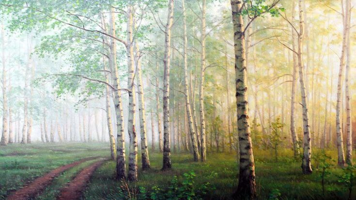
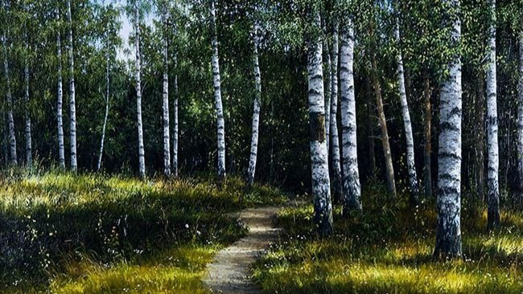
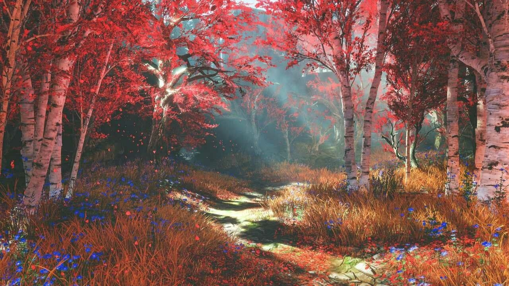
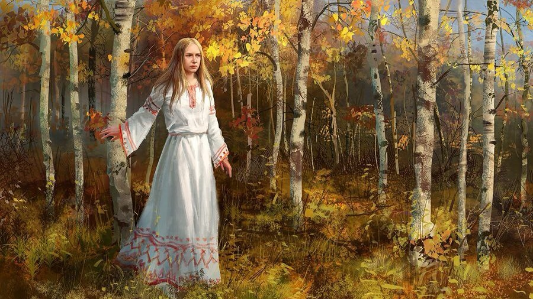
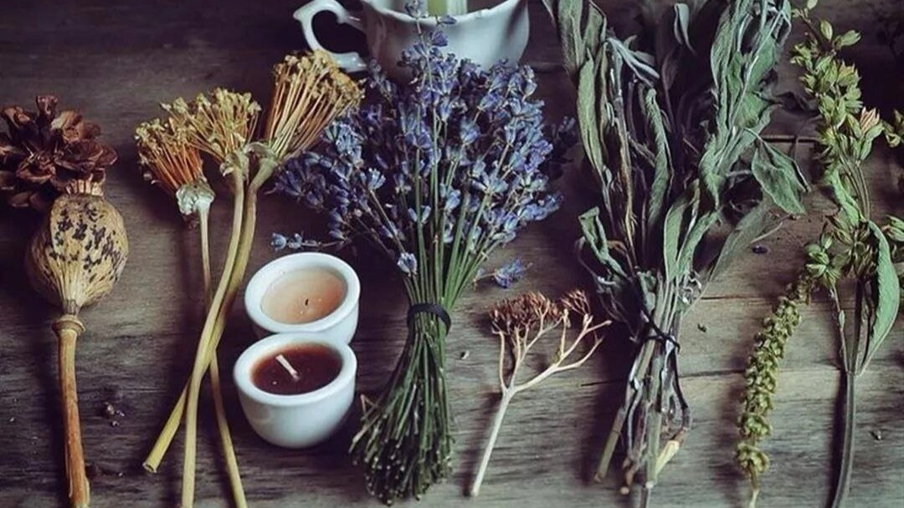

Берёзовая роща Белая

Добро пожаловать в берёзовую рощу Белую!
Берёзовая роща Белая — это светлый, умиротворённый уголок природы, раскинувшийся у берегов реки Ирта, впадающей в Изумрудный пролив. Это место, полное жизни, где свежий воздух напоён ароматами трав и цветов, а мягкий шелест листвы перекликается с плеском близлежащих вод. На западе, неподалеку от рощи, находится Великий лифт в нижний мир, дорога от которого, занимает от половины до полного дня пути, в зависимости от маршрута и условий.
Южная часть

С юга, роща прилегает к городу Викселю и занимает довольно обширную территорию, несмотря на её относительно маленькие размеры на карте (в два раза меньше, чем Идрийский лес). Эта часть рощи более обжита: здесь обустроены лесопилки, водяные мельницы и прочие человеческие постройки.
Северная часть

С севера она граничит с небольшими болотами, за которыми начинается таинственный лес Грёз.
Внешний вид

С рощи открываются восхитительные виды: к северу — на лес Грёз с его причудливыми формами и загадочной атмосферой, а на востоке, за водами пролива, виднеется далёкий материк Лафим, до которого предстоит крайне долгое плавание.
Сама локация представляет собой ровную местность, с небольшими возвышенностями и неглубокими оврагами, но в целом рельеф остаётся мягким и комфортным для передвижения. Здесь нет волшебства, но сама природа кажется одухотворённой: стройные берёзы с белоснежными стволами создают лёгкую, воздушную атмосферу, особенно в солнечные дни, когда свет переливается сквозь их нежную листву.
Живой мир

Благодаря плодородной почве в роще обильно растут травы и грибы, обладающие самыми разными свойствами, начиная от целебных и заканчивая ядовитыми. Это делает её основным местом для травников, начинающих ведьм и собирателей, которые могут дни на пролёт проводить в тени зеленоватых крон, в поисках нужных им ингредиентов для зелий или гильдейских заказов. Кроме того, в Ирте водится множество рыбы, а иногда в её водах можно даже встретить русалок.
Берёзовая роща изобилует жизнью. По её тропам свободно гуляют олени, в кустах прячутся лисы и зайцы, а в траве шуршат мелкие зверьки.
В конечном итоге...
В отличие от леса Грёз, она совершенно безопасна: здесь нет крупных хищников или магических существ, поэтому это место подойдёт не только для собирательства или охоты, но и просто чтобы прийти и насладиться красотой восточной природы Средиземья.